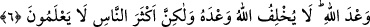
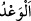

Ey miskin, sen hep dertsiz kalmışsın; dert çekenlerin sızısından haberin yok. O
mutluluk ve sevinç dolu ağlamadan ve sıkıntı ve meşakkat dolu gülüşten bir nişan, bir
alâmet görmemişsin.
Ben ağlamayı gülmekle karıştırmışım. Gizlice ağlar, âşikâr olarak gülerim
Ey dost, zannetme ki ben her zaman râzı ve hoşnudum; benim ihtiyaç sâhibi
olduğumdan habersizsin.
“Allah,” kullarından zayıf olsun, güçlü olsun kendisine yardım etmeyi “dilediğine
yardım eder.” Bu cümle, “Eninde sonunda emir Allâh’ındır.” cümlesinin muhtevâsını
açıklayan bir başlangıç cümlesidir.
“O, mutlak güç sâhibidir,” Azîz’dir; izzet ve galebede nihâyetsizdir. Kim olursa
olsun aleyhinde yardımda bulunmak istediği O’nu âciz bırakamaz. “çok esirgeyicidir.”
Rahîm’dir; rahmeti/merhameti çok fazladır. Hangi fırka olursa olsun yardım etmeyi
dilediğine yardım eder. Ya da düşmanlık edeni aziz/üstün kılmaz, dost olanı da zelil
yapmaz. Nitekim el-Münâsebât’ta böyle geçmektedir.
el-Vasît’ta işâret edildiği gibi bu (Allâh’ın Rahîm olduğunun bildirilmesi), âyetteki
yardım ve zafer ile murâdın Bedir savaşında müşriklere karşı mü’minlere yardım
edilmesi olduğuna hamledilmiştir.
el-İrşâd’da ise şöyle der: “Buradaki rahmetten murad Allâh’ın dünyevî rahmetidir.
Meşhur kırâata göre bu gâyet açıktır. Çünkü her iki fırka (Rumlar ve İranlılar) da uhrevî
rahmete lâyık değildir. Yukarıdaki son kırâata göre ise müslümanlar uhrevî rahmete
müstehak ise de buradaki rahmetten maksad, dünyevî rahmetin alâmetlerinden olan
Allâh’ın onlara yardım etmesi/onları muzaffer kılmasıdır.
Allâh’ın Azîz/mutlak güç sâhibi olma vasfının önce zikredilmesi, ibret almada önce
geldiğinden dolayıdır.
6. (Bu) Allâh’ın vâdidir. Allah vâdinden caymaz; fakat insanların çoğu bilmezler.
“(Bu) Allâh’ın vâdidir.”
“
” meydana gelmeden önce faydalı bir şeyin meydana getirileceğini haber
vermektir. Bundan önce geçen “O gün müminler de Allâh’ın yardımıyla
sevineceklerdir…” ifâdesi vaad mânâsınadır. Yâni Allah bir vaadde bulunmuştur;
Allâh’ın vaadini bekleyin demektir.
Sonra bu vaadin mânâsının ne olduğu şöyle anlatılmaya başlanmıştır: Noksanlar
münezzeh olan Allâh’ın yalan söylemesi imkansız olduğu için ne Rumlarla ilgili bu
konuda, ne de dünyâ ve âhiretle ilgili diğer konularda “Allah vaadinden caymaz”
“Fakat insanların çoğu” yâni müşrikler ve isyan edenler, câhilliklerinden ve Allah
Teâlâ’nın işleri hakkında düşünmediklerinden O’nun vaadinin doğru olduğunu